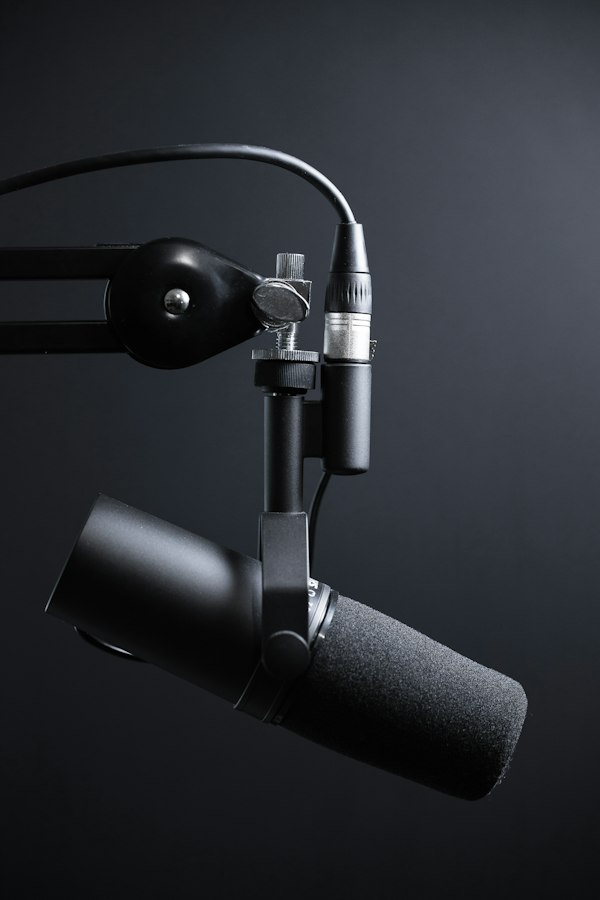

紀錄片
紀錄片
被撐起的日常 - 超高齡社會照顧現場
深入花蓮部落與偏鄉社區，記錄照顧者與高齡長者的真實生活互動與生命故事。
平面攝影
光語・花東光影紀實
捕捉花蓮東海岸晨光與人物勞動的光影瞬間，呈現獨特人文地景。

聲音敘事山海交界處的傾聽
入圍金聲獎作品，結合田野採集聲響與口述歷史，共振東臺灣特有聲音記憶。
 影音創作
影音創作
微光成炬 畢業展形象短片
畢業展覽形象短片，詮釋傳播學子如同微小光芒匯聚成火炬之核心精神。